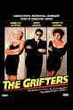
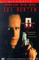
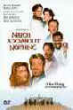

|

|
|
The Golden Bowl has been cited as an ISF Reference
DVD.
Click the ISF image for the complete list of ISF cited DVDs. |
CURRENT DVD REVIEWS |
| Love Me Tender/ C+, B+ |
| Flaming Star/ B, B |
| Charlotte Gray (SE)/ B+, A- |
| John Q. (SE)/ D+, A- |
| Say Anything (SE)/ B+, B |
| Man of the Century (SE)/ B+, A- |
| Collateral Damage (SE)/ C+, A- |
| S.O.B./ C+, B+ |
| Skin Deep/ C+, B |
| Two Family House/ B, B+ |
| Charlie's Angels (SE)/ C, B+ |
| Victor/Victoria (SE)/ A,B+ |
| Great Race, The/ B+, B+ |
| Lagaan/ C, C+ |
| Circus (SE)/ C+, A |
| To Gillian on Her 37th
Birthday/ B-, C+ |
| Audition (SE)/ A-,B |
| Kansas City Confidential/ B, C- |
| Amélie (SE)/ B+, A- |
| Big Heat, The/ B+, B+ |
| Fathom/ C+,C |
| Our Lady of the
Assassins/B+,B+ |
| Gosford Park (SE)/ A, A |
| Hombre/ B, B+ |
| Atlantic City/ A, A- |
| Monster's Ball (SE)/ B+, B+ |
| Majestic, The (SE)/ C+, A |
| Kate and Leopold (SE)/ B, B+ |
| A Beautiful Mind (SE)/ A-,A |
| Witness for the Prosecution/
B+, B |
| Memento (SE)/ A, A |
| Harry Potter and the
Sorcerer's Stone (SE)/ B+, A |
| Sorry, Wrong Number/ B, B |
| Key Largo/ A-, A- |
| Vanilla Sky (SE)/ C+, A |
| My First Mister (SE)/ B, B+ |
| Bite the Bullet/ B, C+ |
| Bob Le Flambeur (SE)/ A-, B |
| Black Knight (SE)/ C, A- |
| Vikings, The (SE)/ B, B |
| Ali/ B, A- |
| Gambler, The (1974)/ B+, B- |
| Fatal Attraction (SE)/ B+, B |
| It
Came From Outer Space (SE)/ B, B+ |
| Requiem for a Heavyweight/ B+,B+ |
| Calamity Jane/ A-, B+ |
| Barcelona (SE)/ A-, B |
| Cowboy/ B, C |
| Harvey Girls (SE)/ B+, B+ |
| Serendipity (SE)/ B, B+ |
| Texas Rangers/ C+, C+ |
| Dancing at the Blue Iguana (SE)/ C+, A- |
| Domestic Disturbance (SE)/ C, B+ |
| Bread and Tulips/ B+, B+ |
| Behind Enemy Lines (SE)/ B-, A |
| Metropolis (Anime) SE/ B, B |
| Accused, The/ B+, B+ |
| Projectionist, The/ C+, C+ |
| Tall Guy, The/ B+, B |
| Life on a String/ B+, D- |
| Mulholland Dr./ B+, B+ |
| Omaha (SE)/ C+, D |
| Life as a House (SE)/ B-,B |
| Spy Game (SE)/ B-,A |
| Sexy Beast (SE)/ B+, A- |
| Party, The/ B, C |
| Fresh (SE)/ A-, A- |
| Eat, Drink, Man, Woman/ B+, A- |
| K-Pax (SE)/ B+, A |
| Strictly Ballroom (SE)/ A-, B+ |
| Training Day (SE)/ B+, A (F) |
| Purple Noon/ B+, C+ |
|


Films on Disc has been sited by Classic Movies as one of their
Best New Links.

The editors of Britannica.com have selected Films on Disc as one of
the best on the Internet when reviewed for quality, accuracy of
content, presentation and usability.
© 2002 Films on
Disc
Stuart J. Kobak
ALL RIGHTS RESERVED. |
|
|
| |
|
Films
on Disc Internet Magazine includes DVD reviews and DVD feature
articles, plus Film, Movie Poster and DVD Links.
Films
on Disc
The
Ultimate DVD Review Site
Front
Cover
May 2000
Last
Update
August 17, 2002
In this issue......
Selections
from the Feature Archive
|
Roman
Holiday

Join the editor and his family on a
trip through Roman movie sites in this unusual feature.
|
The
Exquisite Muse of Zhang Yimou

The powerful image-making of Zhang
Yimou has revealed itself in virtually every film he has made.
|
Hail, Hail, the Gangs in Hollywood

From Angels
with Dirty Faces to West Side Story to Menace II Society, Hollywood
has depicted youth gangs as reflections of the times.
|
Sturges
Emerges

Preston Sturges was Hollywood's resident comic genius for more
than a decade. His movies are timeless.
|
Click
on the image to read all about it.

|
Little
Fugitive/A-,B+
An insightful film about childhood and a document to a world gone by. Check out the camera use thirty odd years before the advent of the Steadicam.
Grifters,
The/A,A-
A film of
extraordinary power that pulls no punches, The Grifters is not to be missed.
John Cusack, Angelica Huston and Annette
Bening play for keeps in this dark noir.
The
Hunted/B+,A- 
Christopher Lambert is perfectly cast as a American businessman in Japan caught in the middle of a Samurai feud. Plenty of excitement and excellent swordplay
Much Ado About
Nothing/A,A-

Kenneth Branagh does the Bard
May
20, 2000
again with enormous success. One of the best Shakespeare adaptation ever. Wonderful cast, ebullient direction in an a gem of an anamorphic DVD. |
|
|
|


Doug Pratt's been doing it longer than just about
anyone in the business, reviewing laser discs, that
is, and now DVDs too. The venerable Laserdisc
Newsletter has been publishing since 1984. Pratt
probably has a large enough stock of laser discs in
his house to build a DVD-proof bomb shelter. Check
out his on-line reviews at DVDlaser.com.
 It
rains a lot in Portland, so DVDcorner.net
provides an umbrella of entertainment with lots of DVD reviews and
DVD news. Check out the monthly give-a-ways too!. It
rains a lot in Portland, so DVDcorner.net
provides an umbrella of entertainment with lots of DVD reviews and
DVD news. Check out the monthly give-a-ways too!.

The Cinema Laser
announced a milestone of 500 DVD reviews online.
The home grown print magazine originally for
laserphiles has been publishing for a number of
years and has embraced DVD in a big way. Lots of
helpful information.

A hallmark of Film Threat Magazine is irreverence. The transition
from print to the Internet leaves the acid base in tact. Humorous
criticism with a vengeance.

The
Movie Poster Archive include extensive poster images from the
films of stars like Susan Hayward, Kirk Douglas, Katharine
Hepburn and many more. This month's featured star is
Susan Hayward

Need
a daily fix of movie quotes. Reel Quotes Newsletter has
the answer. Click on the Reel Quotes symbol symbol for more.

Check here for recommended
new releases coming on DVD. Updated frequently.
May
30, 2000
May
20, 2000
Click
for More DVD Alerts
Looking for movie posters, DVDs or
home theater equipment. Check out the auction pages.
 Images
is a non-commercial Web site created for everyone
who enjoys movies and popular culture. Images is
published quarterly; however, new reviews will
appear each week, so check back often. Feature
articles are presented with graphic sophistication. Images
is a non-commercial Web site created for everyone
who enjoys movies and popular culture. Images is
published quarterly; however, new reviews will
appear each week, so check back often. Feature
articles are presented with graphic sophistication.

DVD Verdict
now features more than 500 DVD reviews from an enthusiastic
staff of movie lovers. Chief Judge Sean McGinnis and right and
left hand Kathy Leach wield the Verdict's magic
wand.
 Large variety of movie posters for sale now specializing in Polish and Japanese paper.
Easy interface and a Soho gallery storefront.
Large variety of movie posters for sale now specializing in Polish and Japanese paper.
Easy interface and a Soho gallery storefront.
Choko
Movie Posters
The popular Paris movie poster store makes
it's way to the Internet with an outstanding selection of French Movie Posters. Many
beautiful images on display in a searchable data base.
 Gary
Morris's insightful publication Bright Lights Film Journal
turns the celluloid in films from a unique perspective. Click on the image above for more pure movie views. Gary
Morris's insightful publication Bright Lights Film Journal
turns the celluloid in films from a unique perspective. Click on the image above for more pure movie views.

The
Digital Ring has DVD reviews and
theatrical release reviews as well. Check out their
DVD site of the month feature. Currently, they are
running an interview with DVD
Verdict's Sean McGinnis

Home Vision Cinema
Classic and foreign motion pictures on VHS tape. The title selection is excellent and
informative essays are provided for many of the films.
 Direct
from the corridors of the Home
Theater Forum, Home Theater Talk is
the newest place on the Net to
discuss everything home theater.
Friendly atmosphere and
knowledgeable folks are the secret
ingredients. Direct
from the corridors of the Home
Theater Forum, Home Theater Talk is
the newest place on the Net to
discuss everything home theater.
Friendly atmosphere and
knowledgeable folks are the secret
ingredients.
Imaging
Science Foundation
The Imaging Science Foundation promotes proper standards in
home theater viewing. ISF trained technicians offer monitor
calibration services to consumers. The difference in a
properly calibrated monitor can be astounding. Click on the
image to find an ISF member near you.

Specializing in DVD reviews, DVD Authority boasts
almost 400 reviews in an easy to use, elegant,
interface.
|
|